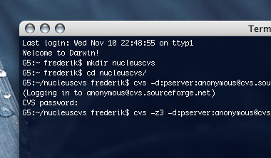

Tip: Nucleus via CVS
woensdag 10 november 2004 | Updates
Om de NP_Captcha plugin (tegen comment-spam) voor Nucleus CMS uit te proberen, moest ik de allerlaatste CVS versie downloaden van Sourceforge.net. Dat kan via enkele speciale programmaatjes zoals WinCVS of MacCVS. Ik waagde mijn kans met MacCVSClient maar hield het al na een half uur voor bekeken: al die opties, instellingen... Voor een leek is zo'n onderneming beslist overload.
Keep it simple! Dankzij een tip van Kasper weet ik nu wel beter. Een CVS project downloaden van Sourceforge houdt niet meer in dan twee eenvoudige opdrachtregels in de shell van eender welk UNIX systeem (zoals Mac OS X). “Logisch toch!”, lacht de doorgewinterde developer dan. Ik heb er wel een uur op zitten zoeken... ;-)

rita willaert op 15 november 2004
Swakopmund, Frederik, ik wil even testen of je mij van zo ver kan lezen. Ik kan in elk geval hier in Namibie, je website raadplegen. Vandaag, geen politiek bij ons maar een echte safari met jeep in de hoge duinen.... Geweldig! Skieen, zwarte pistes, maar met vierwielaandrijving!